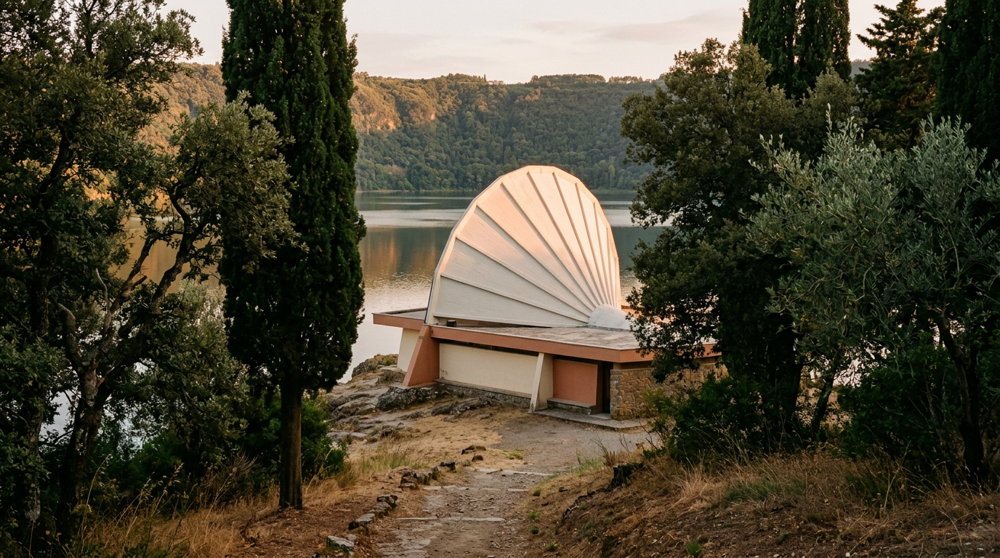

La Madonna del Lago — la chiesa voluta da Paolo VI.

In paese tutti la chiamano Madonna del Lago, ma il suo nome è chiesa di Maria Santissima del lago Albano. Sta sulla riva, ai piedi del borgo, e la si riconosce da lontano per la copertura bianca a ventaglio. Non è antica: è una chiesa degli anni Settanta, nata dal desiderio di un Papa e da una festa di chi lavorava intorno al lago.
Prima la festa, poi la chiesa
La storia comincia nel 1954, anno mariano, quando il parroco di Castel Gandolfo don Dino Sella istituisce la festa della Madonna del Lago, per coinvolgere tutti i fedeli che lavoravano intorno allo specchio d'acqua (Vatican News). Il cuore della festa era una processione di barche dedicata alla Madonna, che partiva dagli impianti del CONI e raggiungeva la località I Quadri, vicino al ninfeo del Bergantino (Wikipedia).
Sulla riva, però, una chiesa non c'era. Paolo VI, che dal 1963 trascorreva a Castel Gandolfo ogni estate, da metà luglio a metà settembre, decise di farne costruire una. È una delle opere che volle per la popolazione del paese, insieme alla scuola elementare pontificia che oggi porta il suo nome e alla chiesa di San Paolo nel quartiere sorto lungo l'Appia (Stato della Città del Vaticano).
Una vela bianca sul lago
Il progetto fu affidato a Francesco Vacchini, direttore tecnico della Fabbrica di San Pietro; i lavori iniziarono nel 1966 e terminarono nel 1977. L'architetto doveva risolvere un problema preciso: offrire spazio comodo ad almeno seicento persone nelle giornate calde d'estate, senza far sentire persi, in inverno, i circa cinquanta fedeli residenti. La soluzione fu dividere la chiesa in due: un'aula interna per i mesi freddi e uno spazio all'aperto per l'affluenza estiva (Wikipedia).
A coprire tutto è una struttura a ventaglio in cemento armato dipinto di bianco, sormontata da una croce. Per Vacchini era la metafora della vela della “navicella del Principe degli Apostoli che naviga sulle acque del lago”, e insieme un segno visibile da ogni punto della riva. All'interno gran parte degli arredi liturgici è dello scultore Tommaso Gismondi: la Via Crucis, la statua della Madonna, il tabernacolo e una Pietà donata da Paolo VI (Wikipedia).
“Era la realizzazione di un suo vivo desiderio, sgorgato dalla sua ansia pastorale.”Giovanni Paolo II, omelia alla Madonna del Lago, 2 settembre 1979
Il 15 agosto 1977
Paolo VI consacrò la chiesa il 15 agosto 1977, festa dell'Assunta (Comune di Castel Gandolfo). Era già malato: sarebbe morto l'anno seguente, proprio a Castel Gandolfo, la sera del 6 agosto 1978 (Stato della Città del Vaticano). Due anni dopo la consacrazione, il 2 settembre 1979, Giovanni Paolo II celebrò qui la Messa e ricordò il predecessore: quel giorno del 1977 “il Papa Paolo VI veniva con grande gioia a celebrare la Santa Messa in questa Chiesa del Lago, che egli aveva voluto far erigere qui, su queste sponde, per il bene dei fedeli residenti e dei turisti” (Santa Sede).
Il Papa sulla barca
Il 29 agosto 2026 la festa ha vissuto il suo momento più alto. Leone XIV ha celebrato la Messa nella chiesa, che fa parte della parrocchia pontificia di San Tommaso da Villanova, e poi ha preso parte alla processione. Paolo VI e Giovanni Paolo II vi avevano partecipato, ma nessuno dei due aveva percorso il tratto sull'acqua (Vatican News). Il simulacro è stato portato a piedi fino allo stabilimento Tropicana e poi imbarcato con il Papa sul battello “Falco”, ornato di fiori gialli e bianchi, per circa 25 minuti di navigazione fino al Giorgio's beach, ai piedi del Palazzo Apostolico, scortato da canoe, dragon boat e imbarcazioni delle forze dell'ordine (Vatican News).
Nell'omelia Leone XIV ha parlato della processione come di uno di quei “gesti semplici, con cui rinnoviamo la nostra fiducia in Dio e la nostra devozione filiale alla sua Santissima Madre” (Santa Sede). Il parroco don Tadeusz Rozmus ha ricordato l'intento di Paolo VI: una chiesa che “respira il lago”, perché rappresenta la barca di San Pietro (Vatican News).
Come visitarla
La chiesa si trova in via Spiaggia del Lago 12, lungo la strada che costeggia la riva (Italia.it). Si raggiunge scendendo a piedi dal centro storico o in auto dalla strada del lago. Per gli orari delle Messe conviene informarsi presso la parrocchia di San Tommaso da Villanova; fuori dalle celebrazioni, il sagrato aperto sull'acqua è già una ragione per fermarsi, soprattutto al tramonto.